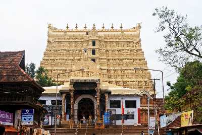
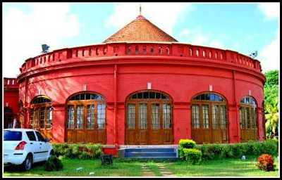
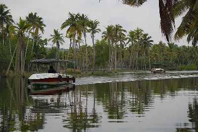
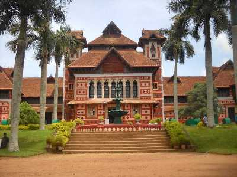

AGASTHYAKOODAM
Perched at an altitude of 1,868 meters within the Neyyar Wildlife Sanctuary, Agastya Mala Peak is also called Agastyarkoodam. The peak features a life sized statue of Lord Agastya - a Hindu Sage. Trekking is the best way to scale the heights, and the end result is absolutely exhilarating

PADMANABHA SWAMY TEMPLE
One of the 108 Divya Desams, Sree Padmanabhaswamy Temple is located in Thiruvananthapuram, the capital city of Kerala. Embellished in gold-plated covering, the temple is opened only to Hindu followers. Dedicated to Lord Padmanabha; one of the avatars of Lord Vishnu, the Padmanabhaswamy Temple is one of the principal centres of Vaishnava worship in the dharma of Vaishnavism
NEYYAR DAM WILD LIFE SANCTUARY
Famous for its Lion and Deer Safari, Neyyar Wildlife Sanctuary is a treat for nature enthusiasts. The park houses a crocodile farm and elephant rehabilitation centre. Ask for a guided tour of the sanctuary which is quite informative.

KANAKAKUNNU PALACE
Close to the Napier Museum, the Kanakakunnu Palace was built under the rule of Travancore King. Today, the palace is host to plethora of cultural programs that are held on its premises.

POOVAR ISLAND
Poovar, a small coastal village along the natural harbour at Vizhinjam, is believed to have been the place called 'Ophir' where the ships of the biblical king Solomon had arrived. It was then an important center of trade for sandalwood, spices and timber.
